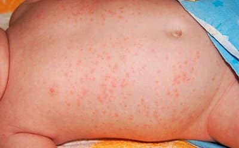
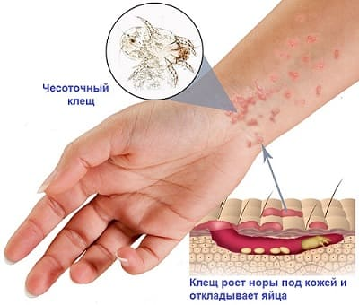

Внезапно появляющиеся разнообразные изменения на коже врачи называют сыпью. Существует несколько десятков болезней, при которых сыпь бывает всегда, и несколько сотен, при которых она может быть. Подавляющее большинство этих заболеваний вовсе не страшны, но встречаются и очень (!) опасные, так что с сыпью надо быть осторожным.
Для начала отметим, что существует три группы болезней, при которых на коже могут появляться высыпания:
• Инфекционные болезни.
• Аллергические заболевания.
• Болезни крови и сосудов.
Рассмотрим их поподробнее.
Инфекционные болезни – наиболее частая причина сыпи, а убедиться в том, что причина сыпи именно инфекция, как правило, несложно. Ведь, помимо сыпи, обязательно должны быть и другие признаки инфекционной болезни – контакт с инфекционным больным, острое начало, повышение температуры тела, потеря аппетита, озноб, что-то болит (горло, голова, живот), или что-то напухло, или насморк, или кашель, или понос, или…
Появляется сыпь при болезнях, которые вызывают вирусы: корь, краснуха, ветряная оспа – это наиболее частые, но есть множество других со страшными названиями – герпетическая инфекция, инфекционный мононуклеоз, инфекционная эритема, внезапная экзантема и т. д. Особенностью всех этих болезней является практически полное отсутствие возможностей принципиально помочь больному, поскольку эффективных способов борьбы с вирусами пока еще не придумали. Но ничего особенно печального в этом нет: человеческий организм в течение одной-двух недель с вирусом справляется и сам.
Причиной инфекционных сыпей могут быть бактерии. С ними, с одной стороны, попроще – есть антибактериальные препараты (антибиотики, сульфаниламиды), способные заболевшему помочь. Но, с другой стороны, заболевания сами по себе могут быть довольно серьезными, когда сыпь – это так, мелочь, по сравнению со всем остальным.
Самая частая бактериальная инфекция с сыпью – скарлатина, но у всех на слуху множество других болезней, при которых бывает сыпь, – брюшной и сыпной тиф, сифилис, менингит, стафилококковая инфекция (список, к сожалению, далеко не полный).
Сыпь как проявление аллергии – совсем не редкость (мягко говоря). Мысли по поводу аллергической природы болезни вообще и сыпи в частности возникают, как правило, тогда, когда, во-первых, нет признаков инфекции – т. е. не нарушено особо общее состояние, нормальная температура, не пропал аппетит – и во-вторых, есть на что грешить – т. е. имел место контакт с чем-то (кем-то), кто мог являться источником аллергии. Это что-то могло быть съедено (цитрусовые, шоколад, таблетки), это что-то могло быть уколото (лекарство), этим можно было подышать (покрасили, побрызгали, помазали), об это можно было потереться (кошки, собаки, коврики, одежда, «хорошо» покрашенная или в чем-то «хорошем» постиранная).

Из перечисленного легко сделать вывод о наличии четырех основных вариантов аллергии – пищевой, лекарственной, дыхательной (респираторной) и контактной. Возможная причина не всегда бывает очевидной, а ее поиск часто превращает врача, больного и его родственников в истинных последователей Шерлока Холмса.
Сыпь при болезнях крови и сосудов возникает по двум основным причинам.
1 Уменьшение количества или нарушение функционирования особых кровяных клеток – тромбоцитов, которые активно участвуют в процессе свертывания крови (эти уменьшения-нарушения часто бывают врожденными).
2 Нарушение проницаемости сосудов. Сыпь при этих болезнях имеет вид крупных или мелких кровоизлияний, ее появление провоцируется травмами или другими болезнями – например, повышением температуры при обычной простуде.
Из перечисленного легко сделать вывод: однозначно выделить причину сыпи не всегда возможно. Например, заболел человек воспалением легких. Укололи пенициллин – появилась сыпь. Т. е. причина болезни – инфекция, а причина сыпи – аллергия.
Ну, а теперь итоги, выводы и еще кое-какая полезная информация.
1 Самая страшная сыпь возникает при так называемой менингококковой инфекции. Менингококк – микроб, который чаще всего вызывает менингит, но кроме менингита он способен вызвать заражение крови, это состояние врачи называют менингококкемия. При менингококкемии от момента появления сыпи до гибели человека может пройти менее суток, но при своевременном лечении шансы на спасение – 80–90 %. Именно в этой связи очень, очень вас прошу: любую сыпь обязательно показывайте врачу, и чем быстрее, тем лучше. Если появление сыпи сопровождается рвотой и высокой температурой, а элементы сыпи имеют вид кровоизлияний – используйте все (!) возможности для того, чтобы как можно быстрее доставить заболевшего в инфекционную (или хотя бы в ближайшую) больницу.
2 Из трех основных детских вирусных инфекций с сыпью (корь, краснуха, ветрянка) наиболее опасна корь, но у привитых детей она либо не возникает, либо протекает легко. Не игнорируйте профилактические прививки!
3 Любого больного с сыпью необходимо прятать подальше от беременных женщин, пока врач не скажет, что это не краснуха (вирус краснухи очень опасен для плода).
4 Если сыпь очень-очень чешется (особенно ночью), то у вас вполне может быть чесотка. Это не вирус и не бактерия, это такой клещ, который ползает в коже, эпизодически выбираясь на поверхность и оставляя элементы парной сыпи (вход и выход). Чесотка – совсем не стыдная болезнь для конкретного человека, но стыдная для общества в целом. Подцепить ее можно и в переполненном трамвае, и на железной дороге, и… Да мало ли где и что сейчас можно подцепить? Вот только запускать ее нельзя. Поэтому, если от зуда не можете заснуть – сбегайте поутру на прием к дерматологу, авось полегчает.

5 Помните, что причина сыпи, как правило, внутри, а не снаружи. Никакими синьками, зеленками, йодами и марганцовками больному помочь нельзя. Но уж если очень хочется намазаться самому или разрисовать ребеночка – пожалуйста, только покажите сначала сыпь врачу, а уж потом малярничайте.
Е.О.Комаровский. "Здоровье ребенка"